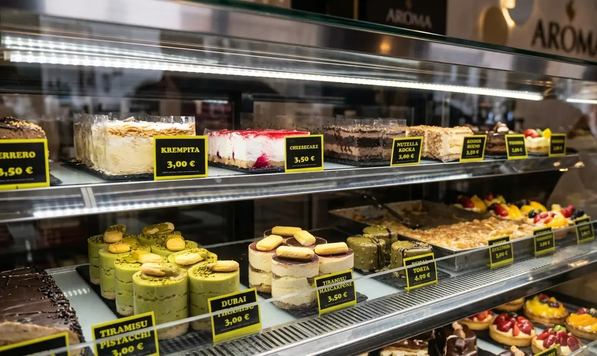
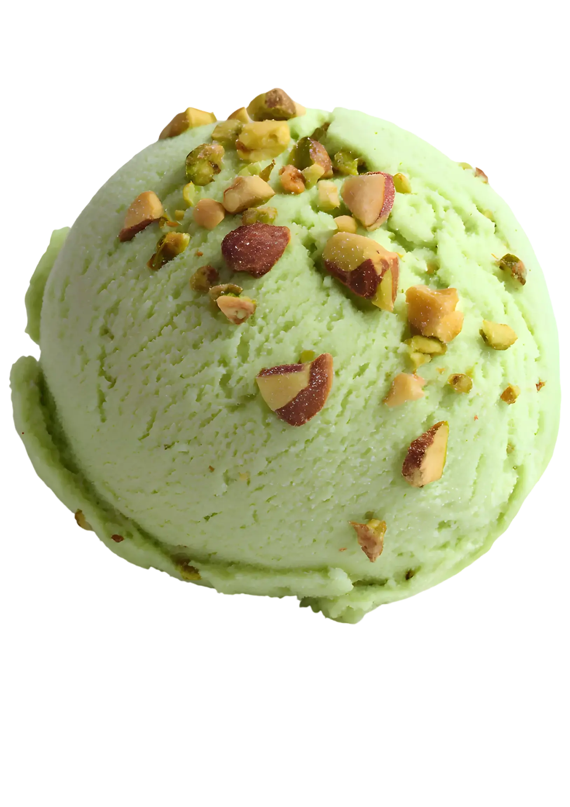
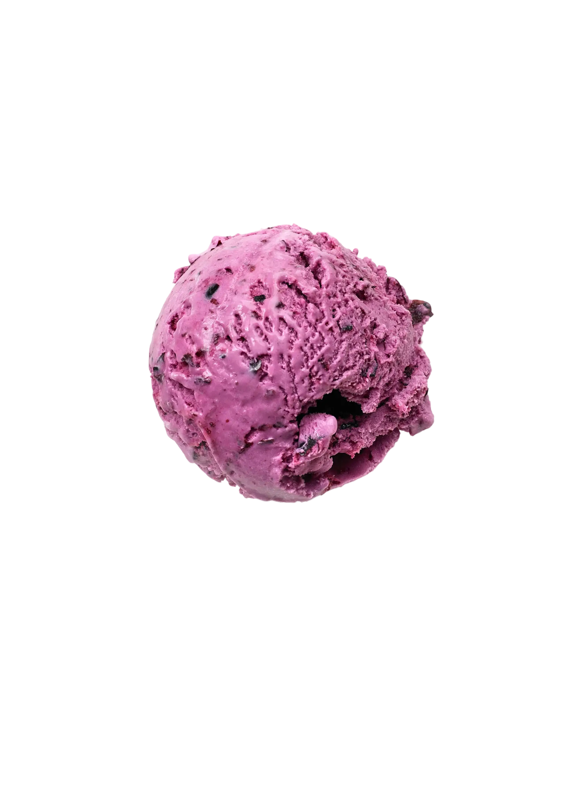

Aroma nudi najkvalitetniji gelato i sladoled u Slavonskom Brodu – rađen svakodnevno od svježih namirnica. Pistacio sa Sicilije, belgijska čokolada, domaća karamela i još 20+ okusa.
Svaki okus rađen je prema autentičnim receptima, s najboljim sastojcima iz cijelog svijeta.

100% pasta od pistacija sa Sicilije. Intenzivan, autentičan okus koji se ne zaboravlja.
Belgijska čokolada s hrskavim komadićima lješnjaka. Bogat, pun okus.

Svježe bobičasto voće na kremastoj podlozi. Osvježavajuće i bogato vitaminima.
Domaća karamela s prstohvatom morske soli. Neobičan, ali savršen spoj slatkog i slanog.
Naš gelato prati autentičnu talijansku tradiciju – manji udio zraka, intenzivniji okus, mekša tekstura od industrijskog sladoleda.
Pistacio sa Sicilije, belgijska čokolada, vanilija s Madagaskara. Svaki okus priča priču o svom podrijetlu.
Svaki dan pripremamo gelato u našoj slastičarni. Bez zamrzavanja, bez konzervansa – samo svježe.
Naručite sladoled i gelato putem Wolt ili Glovo platforme – brza dostava po Slavonskom Brodu.
Trg Ivane Brlić Mažuranić 6, 35000 Slavonski Brod | Pon–Ned: 08:00–24:00